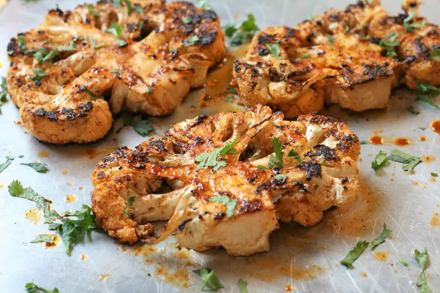

Grilled Cauliflower Steaks

Description
These grilled cauliflower steaks are not just beautifully caramelized with a flavorful smoky taste, the presentation is lovely! A delicious change from boring old steamed cauliflower. I like my cauliflower a little on the firm side, so add a few extra minutes if you like it softer.
Ingredients
- ¼ cup olive oil
- 1 lemon, juiced
- 2 cloves garlic, minced
- 1 teaspoon salt
- 1 teaspoon smoked paprika
- 1 teaspoon brown sugar
- ½ teaspoon chili powder
- 1 pinch ground black pepper
- 2 large heads cauliflower
- 2 tablespoons minced cilantro (Optional)
Steps
- Preheat an outdoor grill to medium-high heat and lightly oil the grate.
- Whisk oil, lemon juice, garlic, salt, smoked paprika, brown sugar, chili powder, and black pepper together in a bowl; set aside.
- Remove the tough bottom leaves from each cauliflower, taking care not to remove the stem. Place the cauliflower heads onto a cutting board with the stem side facing upwards; cut vertically on both sides of the stem to remove the loose florets. Cut each cauliflower vertically through the stem into 2 even "steaks", 1 to 1 1/2 inches thick; remove any remaining small leaves from each steak. Place cauliflower steaks on a baking sheet.
- Brush one side of each steak with some of the oil mixture. Place steaks on the preheated grill, oiled-side down; grill for 5 minutes. Brush more oil mixture on top of steaks and gently flip over; grill until golden brown and slightly charred, 5 to 7 minutes more. Drizzle with any remaining oil and remove to a plate. Sprinkle with cilantro.
Return to main page